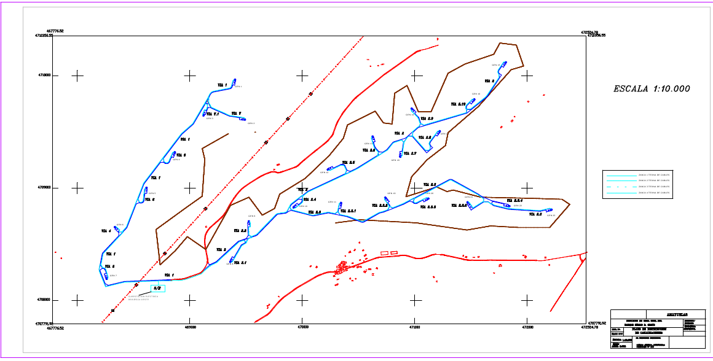

La siguiente figura muestra la distribución de los distintos componentes de un Parque Eólico, donde se puede ver su extensión. Las vías de comunicación están en rojo, los aerogeneradores están rotulados en negro, y en azul las zanjas donde se encuentran los cables de potencia y de comunicaciones. Las curvas de nivel están dibujadas en marrón oscuro. Puede verse que los aerogeneradores están situados en la parte superior de una colina, para mejor aprovechamiento del viento.
